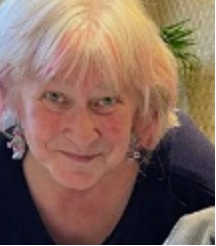

The Seattle Metaphysical Library (legally known as the AS-YOU-LIKE-IT Library) was established in Seattle in 1961. We have grown over the past six decades to hold over 13,000 books plus thousands of audio and video tapes, CDs, DVDs, magazines and newspaper clippings on a variety of esoteric and controversial topics - material designed to help remove the Veil of Maya - the veil of illusion - from our eyes and help us grow into the fully-realized humans that is our natural birthright.
We are an all-volunteer, independent resource center providing esoteric and alternative material and events to support personal growth to enhance our understanding of ourselves, the universe and our place in it. We are open to the respectful public. There is no charge for browsing the materials or reading at our location. Operating expenses are paid for by our subscribers, who are able to borrow material and by the Raynier Foundation. Find out more about becoming a supporter here.
Our events are limited now to occasional Zoom classes, Zoom meetings and off-site events - see a listing on the right, and details on our Events page.
Community
Please feel free to send an email to staff@seattlemetaphysicallibrary.org if you would like to post something on the website, or send out a message in the newsletter. One of the benefits of our Library is an opportunity to interact with other people who share your interests. One way of allowing that exchange to continue is to reactivate the blog, and post contributions in the newsletter.
Supporters Meeting We will continue to have our Supporters meetings once a month, as a Zoom meeting. If you are interested in being part of the support team that keeps the Library running, and would like to participate in the Zoom meeting, email staff@seattlemetaphysicallibrary.org for the Zoom invitation.
Volunteers
We are always interested in reliable volunteers who care about the Library. Meet other people with the same esoteric interests that you have. The Library has over 16,000 books, and they need to stay organized by category - volunteering is a great way to see what the Library has to offer. We also need help with publicity, fundraising, helping members and visitors, leading discussion groups and events. E-mail us or stop by if interested.
Library Contents
Mind-Body Healing, Rife Technologies, Goddess Studies, Ancient Egypt, Alternative Health, Ayurvedic Medicine, Christianity, Buddhism, Art, Chinese Philosophy, UFOs, Gender Studies, Parapsychology, Dead Sea Scrolls, New Physics, Rudolf Steiner, Alchemy, Astronomy, Shamanism, Sufism, Qabbala, Herbalism, Ancient Near East, Atlantis, Pre-Columbian America, Theosophy, Magik, Tarot, Near Death research, Tibetan Buddhism, History, Politics and Conspiracies, Secret Societies, Occult Fiction, Science Fiction, Tesla Technologies, Edgar Cayce, Comparative Religion, Yoga, Consciousness Studies, and much more! For a detailed list of topics please see our Booklist page.
Stories About Us
Can you find seattles most secret library?Alert - this is archived on Archive.org - the original site has been removed. Archive.org takes a while to search its database and render the page, so be patient.
About Martha!
Martha has a warm invitation for interested people to visit the reading room she and other volunteers have set up in the basement of her house for your use. Please contact her to get her address, and to set up a time to visit.
You may email her at marth@seattlemetaphysicallibrary.org or call her at
(206) 551-8277.
The phone will usually get a faster response than the email
She will have a copy of the membership database, and if you are a paid-up member, you may borrow and return books here. We are working on setting up a branch reading room on Mercer Island for Meditation and Buddhist books.